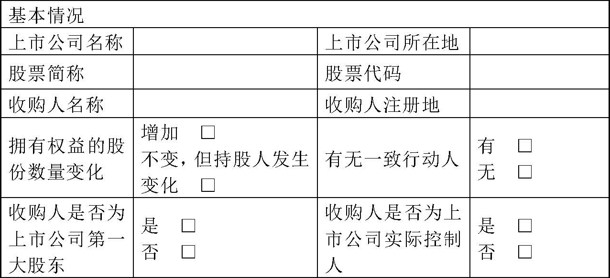

中国证券监督管理委员会公告〔2014〕25号
现公布《公开发行证券的公司信息披露内容与格式准则第16号——上市公司收购报告书（2014年修订）》，自公布之日起施行。
中国证监会
2014年5月28日
附件：公开发行证券的公司信息披露内容与格式准则第16号——上市公司收购报告书（2014年修订）
公开发行证券的公司信息披露内容与格式准则第16号——上市公司收购报告书（2014年修订）
第一章 总则
第一条 为了规范上市公司收购活动中的信息披露行为，保护投资者的合法权益，维护证券市场秩序，根据《证券法》、《上市公司收购管理办法》（以下简称《收购办法》）及其他相关法律、行政法规及部门规章的有关规定，制订本准则。
第二条 通过协议收购、间接收购和其他合法方式，在上市公司中拥有权益的股份超过该上市公司已发行股份的30%的投资者及其一致行动人（以下简称收购人），应当按照本准则的要求编制和披露上市公司收购报告书（以下简称收购报告书）。
第三条 收购人是多人的，可以书面形式约定由其中一人作为指定代表以共同名义负责统一编制和报送收购报告书，依照《收购办法》及本准则的规定披露相关信息，并同意授权指定代表在信息披露文件上签字盖章。
第四条 本准则的规定是对上市公司收购信息披露的最低要求。不论本准则中是否有明确规定，凡对上市公司投资者做出投资决策有重大影响的信息，收购人均应当予以披露。
第五条 本准则某些具体要求对收购人确实不适用的，收购人可以针对实际情况，在不影响披露内容完整性的前提下做适当修改，但应在报送时作书面说明。
第六条 由于商业秘密（如核心技术的保密资料、商业合同的具体内容等）等特殊原因，本准则规定的某些信息确实不便披露的，收购人可以向中国证监会申请免于披露，经中国证监会同意后，可以不予披露。
第七条 在不影响信息披露的完整性和不致引起阅读不便的前提下，收购人可以采用相互引证的方法，对各相关部分的内容进行适当的技术处理，以避免重复和保持文字简洁。
第八条 收购人在编制收购报告书时，应当遵循以下一般要求：
（一）文字应当简洁、通俗、平实和明确，引用的数据应当提供资料来源，事实应有充分、客观、公正的依据；
（二）引用的数字应当采用阿拉伯数字，货币金额除特别说明外，应指人民币金额，并以元、千元或百万元为单位；
（三）收购人可以根据有关规定或其他需求，编制收购报告书外文译本，但应当保证中、外文本的一致性，并在外文文本上注明：“本收购报告书分别以中、英（或日、法等）文编制，在对中外文本的理解上发生歧义时，以中文文本为准”；
（四）收购报告书全文文本应当采用质地良好的纸张印刷，幅面为209×295毫米（相当于标准的A4纸规格）；
（五）在报刊刊登的收购报告书最小字号为标准6号字，最小行距为0.02；
（六）不得刊载任何有祝贺性、广告性和恭维性的词句。
第九条 收购人在收购报告书中援引律师、注册会计师、财务顾问及其他相关专业机构出具的专业报告或意见的内容，应当说明相关专业机构已书面同意上述援引。
第十条 收购人在报送收购报告书的同时，应当提交按照本准则附表的要求所编制的收购报告书附表及有关备查文件。有关备查文件应当为原件或有法律效力的复印件。
第十一条 收购人应当按照《收购办法》的规定将收购报告书摘要、收购报告书及附表刊登于至少一种中国证监会指定的报刊，并根据证券交易所的要求刊登于指定网站，或者提示刊登该报告的收购人或上市公司的网址。
收购人应当将收购报告书、附表和备查文件备置于上市公司住所和证券交易所，以备查阅。
第十二条 收购人董事会及其董事或者主要负责人，应当保证收购报告书及相关申报文件内容的真实性、准确性、完整性，承诺其中不存在虚假记载、误导性陈述或重大遗漏，并就其保证承担个别和连带的法律责任。
如个别董事或主要负责人对报告内容的真实性、准确性、完整性无法做出保证或者存在异议的，应当单独陈述理由和发表意见。
第二章 上市公司收购报告书
第一节 封面、书脊、扉页、目录、释义
第十三条 收购报告书全文文本封面应标有“XX公司（上市公司名称）收购报告书”字样，并应载明以下内容：
（一）上市公司的名称、股票上市地点、股票简称、股票代码；
（二）收购人的名称或姓名、住所、通讯地址；
（三）收购报告书签署日期。
第十四条 收购报告书全文文本书脊应标明“XX公司收购报告书”字样。
第十五条 收购报告书扉页应当刊登收购人如下声明：
（一）编写本报告书的法律依据；
（二）依据《证券法》、《收购办法》的规定，本报告书已全面披露收购人（包括投资者及与其一致行动的他人）在XX公司拥有权益的股份；
截至本报告书签署之日，除本报告书披露的持股信息外，上述收购人没有通过任何其他方式在XX公司拥有权益；
（三）收购人签署本报告已获得必要的授权和批准，其履行亦不违反收购人章程或内部规则中的任何条款，或与之相冲突；
（四）涉及须经批准方可进行的收购行为，收购人应当声明本次收购在获得有关主管部门批准后方可进行、有关批准的进展情况；是否已经向中国证监会申请豁免其要约收购义务；涉及其他法律义务的，应当声明本次收购生效的条件；
（五）本次收购是根据本报告所载明的资料进行的。除本收购人和所聘请的专业机构外，没有委托或者授权任何其他人提供未在本报告书中列载的信息和对本报告书做出任何解释或者说明。
第十六条 收购报告书目录应当标明各章、节的标题及相应的页码，内容编排也应符合通行的中文惯例。
第十七条 收购人应就投资者理解可能有障碍及有特定含义的术语作出释义。收购报告书的释义应在目录次页排印。
第二节 收购人介绍
第十八条 收购人为法人或者其他组织的，应当披露如下基本情况：
（一）收购人的名称、注册地、法定代表人、注册资本、工商行政管理部门或者其他机构核发的注册号码及代码、企业类型及经济性质、经营范围、经营期限、税务登记证号码、股东或者发起人的姓名或者名称（如为有限责任公司或者股份有限公司）、通讯地址、通讯方式（包括联系电话）；
（二）收购人应当披露其控股股东、实际控制人的有关情况，并以方框图或者其他有效形式，全面披露与其控股股东、实际控制人之间的股权控制关系，实际控制人原则上应披露到自然人、国有资产管理部门或者股东之间达成某种协议或安排的其他机构；
收购人应当说明其控股股东、实际控制人所控制的核心企业和核心业务、关联企业及主营业务的情况；
（三）收购人从事的主要业务及最近3年财务状况的简要说明，包括总资产、净资产、收入及主营业务收入、净利润、净资产收益率、资产负债率等；如收购人设立不满3年或专为本次收购而设立的公司，应当介绍其控股股东或实际控制人所从事的业务及最近3年的财务状况；
（四）收购人最近5年受过行政处罚（与证券市场明显无关的除外）、刑事处罚、或者涉及与经济纠纷有关的重大民事诉讼或者仲裁的，应当披露处罚机关或者受理机构的名称，处罚种类，诉讼或者仲裁结果，以及日期、原因和执行情况；
（五）收购人董事、监事、高级管理人员（或者主要负责人）的姓名（包括曾用名）、身份证号码（可以不在媒体公告）、国籍，长期居住地，是否取得其他国家或者地区的居留权；
前述人员最近5年受过行政处罚（与证券市场明显无关的除外）、刑事处罚或者涉及与经济纠纷有关的重大民事诉讼或者仲裁的，应当按照本款第（四）项的要求披露处罚的具体情况；
（六）收购人及其控股股东、实际控制人在境内、境外其他上市公司拥有权益的股份达到或超过该公司已发行股份5%的简要情况；收购人或其实际控制人为两个或两个以上上市公司的控股股东或实际控制人的，还应当披露持股5%以上的银行、信托公司、证券公司、保险公司等其他金融机构的简要情况。
第十九条 收购人是自然人的，应当披露如下基本情况：
（一）姓名（包括曾用名）、性别、国籍、身份证号码、住所、通讯地址、通讯方式以及是否取得其他国家或者地区的居留权等，其中，身份证号码、住所、通讯方式可以不在媒体公告；
（二）最近5年内的职业、职务，应注明每份职业的起止日期以及所任职单位的名称、主营业务及注册地以及是否与所任职单位存在产权关系；
（三）最近5年受过行政处罚（与证券市场明显无关的除外）、刑事处罚或者涉及与经济纠纷有关的重大民事诉讼或仲裁的，应披露处罚机关或者受理机构的名称，所受处罚的种类，诉讼或者仲裁的结果，以及日期、原因和执行情况；
（四）收购人所控制的核心企业和核心业务、关联企业及主营业务的情况说明；
（五）收购人在境内、境外其他上市公司拥有权益的股份达到或超过该公司已发行股份5%的简要情况；收购人为两个或两个以上上市公司控股股东或实际控制人的，还应当披露持股5%以上的银行、信托公司、证券公司、保险公司等其他金融机构的简要情况。
第二十条 收购人为多人的，除应当分别按照本准则第十八条和第十九条的规定披露各收购人的情况外，还应当披露：
（一）各收购人之间在股权、资产、业务、人员等方面的关系，并以方框图的形式加以说明；
（二）收购人应当说明采取一致行动的目的、达成一致行动协议或者意向的时间、一致行动协议或者意向的内容（特别是一致行动人行使股份表决权的程序和方式）、是否已向证券登记结算机构申请临时保管各自持有的该上市公司的全部股票以及保管期限。
第三节 收购决定及收购目的
第二十一条 收购人应当披露其关于本次收购的目的、是否拟在未来12个月内继续增持上市公司股份或者处置其已拥有权益的股份。
第二十二条 收购人为法人或者其他组织的，还应当披露其做出本次收购决定所履行的相关程序及具体时间。
第四节 收购方式
第二十三条 收购人应当按照《收购办法》及本准则的规定计算其在上市公司中拥有权益的股份种类、数量和比例。
收购人为多人的，还应当分别披露其一致行动人在上市公司中拥有权益的股份种类、数量、占上市公司已发行股份的比例。
收购人持有表决权未恢复的优先股的，还应当披露持有数量和比例。
第二十四条 通过协议收购方式进行上市公司收购的，收购人应当披露以下基本情况：
（一）转让协议的主要内容，包括协议转让的当事人、转让股份的种类、数量、比例、股份性质及性质变动情况、转让价款、股份转让的支付对价（如现金、资产、债权、股权或其他安排）、付款安排、协议签订时间、生效时间及条件、特别条款等；
（二）本次拟转让的股份是否存在被限制转让的情况、本次股份转让是否附加特殊条件、是否存在补充协议、协议双方是否就股份表决权的行使存在其他安排、是否就出让人在该上市公司中拥有权益的其余股份存在其他安排；
（三）如本次股份转让需要有关部门批准的，应当说明批准部门的名称、批准进展情况。
第二十五条 通过信托或其他资产管理方式进行上市公司收购的双方当事人，应当披露信托合同或者其他资产管理安排的主要内容，包括信托或其他资产管理的具体方式、信托管理权限（包括上市公司股份表决权的行使等）、涉及的股份的种类、数量及占上市公司已发行股份的比例、信托或资产管理费用、合同的期限及变更、终止的条件、信托资产处理安排、合同签订的时间及其他特别条款等。
第二十六条 虽不是上市公司股东，但通过股权控制关系、协议或其他安排进行上市公司收购的，收购人应当披露形成股权控制关系或者达成协议或其他安排的时间、与控制关系相关的协议（如取得对上市公司股东的控制权所达成的协议）的主要内容及其生效和终止条件、控制方式（包括相关股份表决权的行使权限）、控制关系结构图及各层控制关系下的各主体及其持股比例、以及是否存在其他共同控制人及其身份介绍等。
第二十七条 通过国有股份行政划转、变更、国有单位合并等进行上市公司收购的，收购人应当在上市公司所在地国资部门批准之日起3日内披露股权划出方及划入方（变更方、合并双方）的名称、划转（变更、合并）股份的种类、数量、比例及性质、批准划转（变更、合并）的时间及机构，如需进一步取得有关部门批准的，说明其批准情况。
第二十八条 收购人拟取得上市公司向其发行的新股而导致其拥有权益的股份超过上市公司股本总额30%，且公司控制权发生改变的，应当在上市公司董事会作出向收购人发行新股决议之日起3日内，按照本准则的规定编制收购报告书，说明取得本次发行新股的种类、数量和比例、发行价格及定价依据、支付条件和支付方式、已履行及尚未履行的批准程序、转让限制或承诺、与上市公司之间的其他安排等，并予以公告，在收购报告书的扉页应当声明“本次取得上市公司发行的新股尚须经股东大会批准及中国证监会核准”。
收购人以其非现金资产认购上市公司发行的新股的，还应当披露非现金资产最近两年经具有证券、期货从业资格的会计师事务所审计的财务会计报告，或经具有证券、期货从业资格的评估机构出具的有效期内的资产评估报告。
经中国证监会核准后，上市公司负责办理股份过户手续，公告发行结果。
第二十九条 因执行法院裁定对上市公司股份采取公开拍卖措施，导致申请执行人在上市公司中拥有权益的股份超过上市公司股本总额30%，且公司控制权发生改变的，申请执行人应当在收到裁定之日起3日内披露作出裁定决定的法院名称、裁定的日期、案由、申请执行人收到裁定的时间、裁定书的主要内容、拍卖机构名称、拍卖事由、拍卖结果。
第三十条 因继承或赠与取得上市公司股份而进行上市公司收购的，收购人应当披露其与被继承人或赠与人之间的关系、继承或赠与开始的时间、是否为遗嘱继承、遗嘱执行情况的说明等。
第三十一条 上市公司董事、监事、高级管理人员及员工或者其所控制或委托的法人或其他组织收购本公司股份并取得控制权，或者通过投资关系、协议或其他安排导致其拥有权益的股份超过本公司已发行股份30%的，应当披露以下基本情况：
（一）上市公司是否具备健全且运行良好的组织机构以及有效的内部控制制度、公司董事会成员中独立董事的比例是否达到或者超过一半；
（二）上市公司董事、监事、高级管理人员及员工在上市公司中拥有权益的股份种类、数量、比例，以及董事、监事、高级管理人员个人持股的种类、数量、比例；
如通过上市公司董事、监事、高级管理人员及员工所控制或委托的法人或其他组织持有上市公司股份，还应当披露该控制关系或委托、相关法人或其他组织的股本结构、内部组织架构、内部管理程序、公司章程的主要内容、所涉及的人员范围、数量、比例等；
（三）收购的定价依据、资产评估方法和评估结果；
（四）支付方式及资金来源，如资金来源于向第三方借款，应当披露借款协议的主要内容，包括借款方、借款的条件、金额、还款计划及资金来源；
（五）除上述借款协议外，如果就该股份的取得、处分及表决权的行使与第三方存在特殊安排的，应当披露该安排的具体内容；
（六）如该股份通过赠与方式取得，应当披露赠与的具体内容及是否附加条件；
（七）上市公司实行董事、监事、高级管理人员及员工收购的后续计划，包括是否将于近期提出利润分配方案等；
（八）上市公司董事、监事、高级管理人员是否在其他公司任职、是否存在《公司法》第一百四十九条规定的情形；
（九）上市公司董事、监事、高级管理人员最近3年是否有证券市场不良诚信记录情形；
（十）上市公司是否已履行必要的批准程序；
（十一）上市公司董事会、监事会声明其已经履行诚信义务，有关本次管理层收购符合上市公司及其他股东的利益，不存在损害上市公司及其他股东权益的情形。
第三十二条 因可转换优先股转换为普通股导致收购人取得商业银行控制权，或者导致其拥有权益的股份超过商业银行已发行股份30%的，收购人应当披露可转换优先股的转股条件、转股价格、转股比例及占商业银行已发行股份的比例。
因优先股表决权恢复导致收购人取得上市公司控制权，或者导致其拥有权益的股份超过上市公司已发行股份30%的，收购人应当披露表决权恢复的条件和原因。
第三十三条 收购人应当披露其拥有权益的上市公司股份是否存在任何权利限制，包括但不限于股份被质押、冻结。
第五节 资金来源
第三十四条 收购人应当披露本次为取得在上市公司中拥有权益的股份所支付的资金总额、资金来源及支付方式，并就下列事项做出说明：
（一）如果其资金或者其他对价直接或者间接来源于借贷，应简要说明借贷协议的主要内容，包括借贷方、借贷数额、利息、借贷期限、担保及其他重要条款；
（二）收购人应当声明其收购资金是否直接或者间接来源于上市公司及其关联方，如通过与上市公司进行资产置换或者其他交易取得资金；如收购资金直接或者间接来源于上市公司及其关联方，应当披露相关的安排；
（三）上述资金或者对价的支付或者交付方式（一次或分次支付的安排或者其他条件）。
第六节 后续计划
第三十五条 收购人应当披露其收购上市公司的后续计划，包括：
（一）是否拟在未来12个月内改变上市公司主营业务或者对上市公司主营业务作出重大调整；
（二）未来12个月内是否拟对上市公司或其子公司的资产和业务进行出售、合并、与他人合资或合作的计划，或上市公司拟购买或置换资产的重组计划；
（三）是否拟改变上市公司现任董事会或高级管理人员的组成，包括更改董事会中董事的人数和任期、改选董事的计划或建议、更换上市公司高级管理人员的计划或建议；如果拟更换董事或者高级管理人员的，应当披露拟推荐的董事或者高级管理人员的简况；说明收购人与其他股东之间是否就董事、高级管理人员的任免存在任何合同或者默契；
（四）是否拟对可能阻碍收购上市公司控制权的公司章程条款进行修改及修改的草案；
（五）是否拟对被收购公司现有员工聘用计划作重大变动及其具体内容；
（六）上市公司分红政策的重大变化；
（七）其他对上市公司业务和组织结构有重大影响的计划。
第七节 对上市公司的影响分析
第三十六条 收购人应当就本次收购完成后，对上市公司的影响及风险予以充分披露，包括：
（一）本次收购完成后，收购人与上市公司之间是否人员独立、资产完整、财务独立；
上市公司是否具有独立经营能力，在采购、生产、销售、知识产权等方面是否保持独立；
（二）收购人及其关联方所从事的业务与上市公司的业务之间是否存在同业竞争或潜在的同业竞争，是否存在关联交易；如存在，收购人已做出的确保收购人及其关联方与上市公司之间避免同业竞争以及保持上市公司独立性的相应安排。
第八节 与上市公司之间的重大交易
第三十七条 收购人应当披露各成员以及各自的董事、监事、高级管理人员（或者主要负责人）在报告日前24个月内，与下列当事人发生的以下重大交易：
（一）与上市公司及其子公司进行资产交易的合计金额高于3000万元或者高于被收购公司最近经审计的合并财务报表净资产5%以上的交易的具体情况（前述交易按累计金额计算）；
（二）与上市公司的董事、监事、高级管理人员进行的合计金额超过人民币5万元以上的交易；
（三）是否存在对拟更换的上市公司董事、监事、高级管理人员进行补偿或者存在其他任何类似安排；
（四）对上市公司有重大影响的其他正在签署或者谈判的合同、默契或者安排。
第九节 前6个月内买卖上市交易股份的情况
第三十八条 收购人在事实发生之日前6个月内有通过证券交易所的证券交易买卖被收购公司股票的，应当披露如下情况：
（一）每个月买卖股票的种类和数量（按买入和卖出分别统计）；
（二）交易的价格区间（按买入和卖出分别统计）。
第三十九条 收购人及各自的董事、监事、高级管理人员（或者主要负责人），以及上述人员的直系亲属在事实发生之日起前6个月内有通过证券交易所的证券交易买卖被收购公司股票行为的，应当按照第三十七条的规定披露其具体的交易情况。
前款所述收购人的关联方未参与收购决定、且未知悉有关收购信息的，收购人及关联方可以向中国证监会提出免于披露相关交易情况的申请。
第十节 收购人的财务资料
第四十条 收购人为法人或者其他组织的，收购人应当披露最近3年财务会计报表，并提供最近一个会计年度经具有证券、期货从业资格的会计师事务所审计的财务会计报告，注明审计意见的主要内容及采用的会计制度及主要会计政策、主要科目的注释等。会计师应当说明公司前两年所采用的会计制度及主要会计政策与最近一年是否一致，如不一致，应做出相应的调整。
如截止收购报告书摘要公告之日，收购人的财务状况较最近一个会计年度的财务会计报告有重大变动的，收购人应提供最近一期财务会计报告并予以说明。
如果该法人或其他组织成立不足一年或者是专为本次收购而设立的，则应当比照前款披露其实际控制人或者控股公司的财务资料。
收购人为境内上市公司的，可以免于披露最近3年财务会计报表，但应当说明刊登其年报的报刊名称及时间。
收购人为境外投资者的，应当提供依据中国会计准则或国际会计准则编制的财务会计报告。
收购人因业务规模巨大、下属子公司繁多等原因，难以按照前述要求提供相关财务资料的，须请财务顾问就其具体情况进行核查，在所出具的核查意见中说明收购人无法按规定提供财务资料的原因、收购人具备收购上市公司的实力、且没有规避信息披露义务的意图。
第十一节 其他重大事项
第四十一条 收购人应当披露为避免对报告书内容产生误解而必须披露的其他信息，以及中国证监会或者证券交易所依法要求收购人披露的其他信息。
第四十二条 各收购人的法定代表人（或者主要负责人）或者其指定代表应当在收购报告书上签字、盖章、签注日期，并载明以下声明：
“本人（以及本人所代表的机构）承诺本报告及其摘要不存在虚假记载、误导性陈述或重大遗漏，并对其真实性、准确性、完整性承担个别和连带的法律责任”。
第四十三条 财务顾问及其法定代表人或授权代表人、财务顾问主办人应当在上市公司收购报告书上签字、盖章、签注日期，并载明以下声明：
“本人及本人所代表的机构已履行勤勉尽责义务，对收购报告书的内容进行了核查和验证，未发现虚假记载、误导性陈述或者重大遗漏，并对此承担相应的责任”。
第四十四条 收购人聘请的律师及其所就职的律师事务所应当在上市公司收购报告书上签字、盖章、签注日期，并载明以下声明：
“本人及本人所代表的机构已按照执业规则规定的工作程序履行勤勉尽责义务，对收购报告书的内容进行核查和验证，未发现虚假记载、误导性陈述或者重大遗漏，并对此承担相应的责任”。
第十二节 备查文件
第四十五条 收购人应当将备查文件的原件或有法律效力的复印件报送证券交易所及上市公司。备查文件包括：
（一）收购人为自然人的，提供其身份证明文件；收购人为法人或其他组织的，在中国境内登记注册的法人或者其他组织的工商营业执照和税务登记证，或在中国境外登记注册的文件；
（二）收购人的董事、监事、高级管理人员（或者主要负责人）的名单及其身份证明；
（三）收购人关于收购上市公司的相关决定；通过协议方式进行上市公司收购的，有关当事人就本次股份转让事宜开始接触的时间、进入实质性洽谈阶段的具体情况说明；
（四）与本次收购有关的法律文件，包括股份转让协议、行政划转（变更、合并）的决定、法院裁决的有关判决或裁决书、公开拍卖、遗产继承、赠与等有关法律文件，以及做出其他安排的书面文件，如质押、股份表决权行使的委托或其他安排等；
（五）涉及收购资金来源的协议，包括借贷协议、资产置换及其他协议；
（六）收购人与上市公司、上市公司的关联方之间在报告日前24个月内发生的相关交易的协议、合同；
收购人与上市公司、上市公司的关联方之间已签署但尚未履行的协议、合同，或者正在谈判的其他合作意向；
（七）收购人为法人或其他组织的，其控股股东、实际控制人最近两年未发生变化的证明；
（八）在事实发生之日起前6个月内，收购人及各自的董事、监事、高级管理人员（或者主要负责人）以及上述人员的直系亲属的名单及其持有或买卖该上市公司股份的说明；
（九）收购人所聘请的专业机构及相关人员在事实发生之日起前6个月内持有或买卖被收购公司、收购人（如收购人为上市公司）股票的情况；
（十）收购人就本次股份转让协议收购应履行的义务所做出的承诺（如有）；
（十一）收购人不存在《收购办法》第六条规定情形及符合《收购办法》第五十条规定的说明；
（十二）按照本准则第三十九条要求提供的收购人的财务资料，包括但不限于收购人最近3年财务会计报告及最近一个会计年度经审计的财务会计报告；最近一年经审计的财务会计报告应包括审计意见、财务报表和附注；
（十三）财务顾问意见；
（十四）法律意见书；
（十五）中国证监会及证券交易所要求的其他材料。
第四十六条 收购人应列示上述备查文件目录，并告知投资者备置地点。备查文件上网的，应披露网址。
第三章 上市公司收购报告书摘要
第四十七条 收购人应当在收购报告书摘要的显著位置，按照本准则第十三条的规定披露有关本次收购的重要事项。
第四十八条 收购人应当按照本准则第十五条规定在收购报告书摘要中披露有关声明。
第四十九条 收购报告书摘要应当至少包括本准则第二章第二节、第三节及第四节的内容。
第四章 附则
第五十条 本准则所称拥有权益的股份，是指普通股（含表决权恢复的优先股），不包括表决权未恢复的优先股。
第五十一条 本准则由中国证监会负责解释。
第五十二条 本准则自公布之日起施行。《公开发行证券的公司信息披露内容与格式准则第16号——上市公司收购报告书》（证监公司字〔2006〕156号）同时废止。
附表：
收购报告书

填表说明：
1、存在对照表所列事项的按“是或否”填写核对情况，选择“否”的，必须在栏目中加备注予以说明；
2、不存在对照表所列事项的按“无”填写核对情况；
3、需要加注说明的，可在栏目中注明并填写；
4、收购人是多人的，可以推选其中一人作为指定代表以共同名义制作要约收购报告书及其附表。
收购人（如为法人或其他组织）名称（签章）：
法定代表人（签章）
收购人（如为自然人）姓名：
签字：
日期：